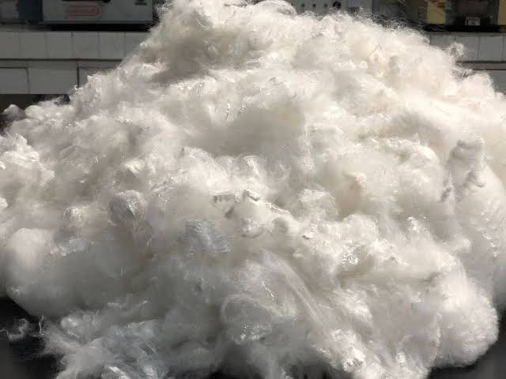

Key Products
Three verticals. One purpose.
We connect Indian buyers with many reputed suppliers from all over the globe, across three specialised material categories.

Recycled Textiles
Used Clothes for Textile Recycling
Recovered garments and mixed rags sourced from reputed global suppliers — the raw material of the textile recycling industry.
Explore
Natural Fibre
Raw Wool & Wool Wastes
Greasy and scoured wools plus wool wastes from trusted origins worldwide, indented for spinners and woollen mills across India.
Explore
Synthetic Fibre
Synthetic Fibre Wastes
Acrylic and other synthetic fibre wastes for regeneration into new yarns — dependable quality, competitive global sourcing.
Explore